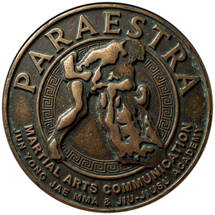
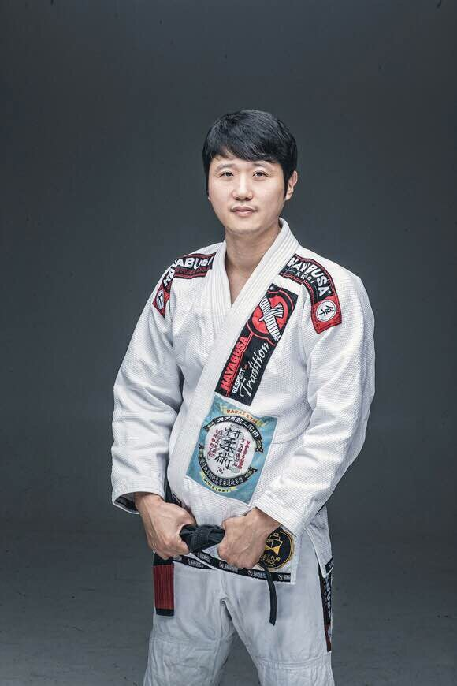

Instructor — 사범
청주 본관 직속 사범

박수환INSTRUCTOR
청주 본관 사범 · 전용재 총관장 직속 제자
- BELT주짓수 블랙벨트
- FIELD주짓수 · 종합격투기 지도

PARAESTRA
일본 주짓수계의 대부 나카이 유키의 공인 제자로, 현재 세계에서 두 번째로 많은 팀 네트워크를 보유한 파라에스트라 주짓수 팀의 한국 총관장입니다. 2006년 당시 국내 랭킹 2위의 종합격투기 선수이기도 했습니다.
고대 그리스어로 '격투가 양성소'라는 뜻을 가지고 있습니다.
전 세계적으로 유명한 파라에스트라를 만든 일본 주짓수계의 대부. 전용재 총관장이 2003년 주짓수에 입문한 뒤 일본으로 유학을 떠나 만난 스승으로, 격투가 양성소의 정신을 한국에 잇는 뿌리가 되었습니다.
2006년 파라에스트라 도쿄에서 수련 시작. 처음엔 제자로 인정받지 못했지만, 일본 지역대회 우승과 2007년 ADCC 일본 최종 예선전 3위로 꾸준함을 증명. 2009년 공인 제자로 인정받아 브라운 벨트를 수여받았고, 이후 종합격투기 대회 '슈토(SHOOTO)'의 세컨을 함께 맡을 만큼 긴밀한 사이가 되었습니다.